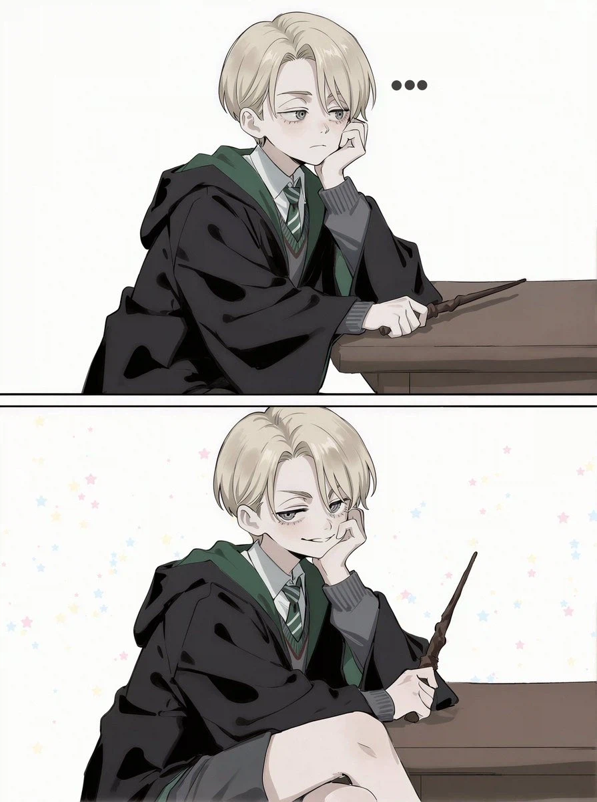

그리ㅍ...
슬리데린 5억저어어어어어ㅓㅓ어ㅓ어엄!!!!!

그리ㅍ...
슬리데린 5억저어어어어어ㅓㅓ어ㅓ어엄!!!!!
덤블도어는 게이니까 보추 해리와 보추 말포이의 뿔비비기에 환장해야 하는 거 아님? ㅋㅋㅋㅋ
그란델왈드 좋아한거 보면 보추취향은 아닐거 같은데
앞에는 보추 말포이를 두고 뒤로는 보추 해리포터를 두면서 환장할 듯
모피어스냐고 ㅋㅋㅋㅋㅋ
덤블도어는 침착하게 말했다
아니 남캐가 여캐되었다가 보추가 된거임?
이제는 시발 여체화 -> 남체화(보추)냐고
시발 하다하다보추가됐네 ㅋㅋㅋㅋㅋㅋㅋㅋㅋㅋㅋㅋㅋ
ㅋㅋㅋㅋㅋㅋㅋㅋㅋㅋㅋㅋㅋㅋㅋㅋㅋㅋㅋㅋㅋㅋ아존나욱겨
포터! 당장 네 매직스틱을 꺼내서 말포이와 겨루거라! 당장 시작하란 말이다 포터!!
아니, 지루는 네 덕에 다 나았어
모피어스 ㅋㅋㅋㅋㅋㅋ
톰보이라고 해줘
모피어스잖아 저거 ㅋㅋㅋㅋㅋㅋㅅㅂ
깨어나라 해리!!
싹다 구속시켜
이것은 인류황제가 높이 평가
하 존나게 맛있다
전원 아즈카반
포터!! 나의 딱총나무 지팡이를 빌려주마! 빨리 이리 오거라!!
???: 엄마...
덤블도어뭐야 ㅋㅋㅋㅋㅋㅋㅋㅋㅋㅋㅋ
이 미친 똥게이다!!!
슬리데린 5나유타점
스니치 게임ㄷㄷ
anon 2-okunen 느낌 나네 ㅋㅋㅋㅋ
스리데린 전원 아즈카반